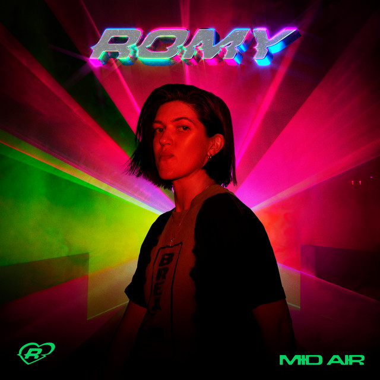

Romy - Mid Air



Información del álbum facilitada por discogs.com:
Fecha de lanzamiento: 2023
Géneros: Electronic, Pop
Estilos: Dance-pop, Indie Pop, House, Synth-pop, Electro
Tracklist:
A1. Loveher ( feat. Romy Madley Croft & Fred again.. & Fred Gibson (2) & Romy Madley Croft)
A2. Weightless ( feat. Romy Madley Croft & Francine Perry & Fred again.. & Fred Gibson (2) & Romy Madley Croft & Stuart Price)
A3. The Sea ( feat. Fred again.. & Romy Madley Croft & Stuart Price & Fred Gibson (2) & Romy Madley Croft)
A4. One Last Try ( feat. Romy Madley Croft & Romy Madley Croft & Stuart Price)
A5. DMC ( feat. Romy Madley Croft & Koreless & Lewis Roberts & Romy Madley Croft)
A6. Strong ( feat. Teneil Throssell & Fred again.. & Romy Madley Croft & Fred again.. & Fred Gibson (2) & Romy Madley Croft & Stuart Price)
B1. Twice ( feat. Romy Madley Croft & Stuart Price & Fred Gibson (2) & Ilsey Juber & Romy Madley Croft)
B2. Did I ( feat. Fred again.. & Romy Madley Croft & Fred Gibson (2) & Romy Madley Croft & Stuart Price)
B3. Mid Air ( feat. Beverly Glenn-Copeland & Brian Eno & Fred again.. & Romy Madley Croft & Stuart Price & Fred Gibson (2) & Romy Madley Croft)
B4. Enjoy Your Life ( feat. Marco Parisi & Giampaolo Parisi & Fred again.. & Jamie XX & Romy Madley Croft & Beverly Glenn-Copeland & Fred Gibson (2) & Jamie Smith (4) & Oby Onyioha & Romy Madley Croft & Stuart Price)
B5. She’s On My Mind ( feat. Fred again.. & Romy Madley Croft & Avalon Emerson & Avalon Emerson & Fred Gibson (2) & Romy Madley Croft & Stuart Price)